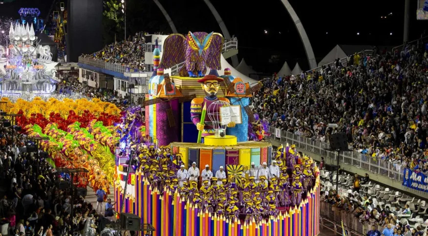

A festa de SP se destaca por mesclar marchinhas e músicas típicas do Carnaval com os sucessos da diva do rock, de uma maneira bem criativa e diferente. Também é destaque o carnaval do Acadêmicos do Baixo Augusta, que tem concentração na esquina da Avenida Paulista com a Rua da Consolação e segue até a Rua Xavier de Toledo.
